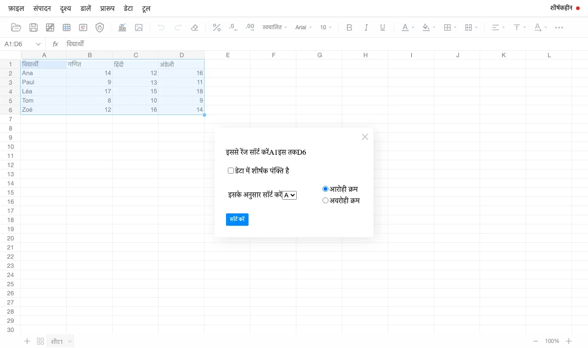
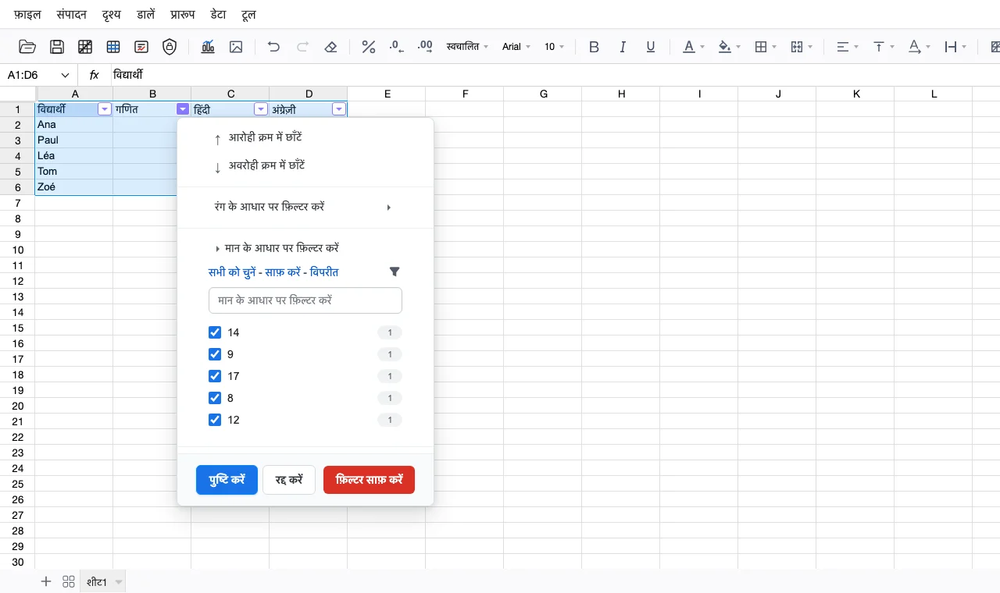
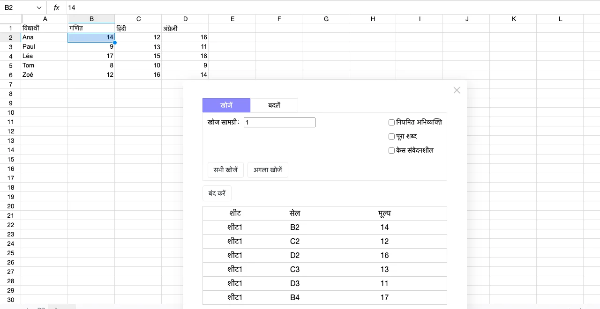

क्रम, फ़िल्टर, खोज
क्रम
| आदेश | परिणाम |
|---|---|
| डेटा › छाँटें और फ़िल्टर करें › आरोही क्रम, अवरोही क्रम | चयन को उसके पहले कॉलम से क्रमबद्ध करता है; और दाएँ क्लिक से भी |
| दायाँ क्लिक › सॉर्ट करें | कॉलम, क्रम, और पहली पंक्ति शीर्षक है या नहीं, चुनता है |

एक कॉलम नहीं, पूरी तालिका चुनें: पंक्तियाँ पूरी रहनी चाहिए। मिले हुए सेलों वाली रेंज क्रमबद्ध नहीं होती।
फ़िल्टर
- शीर्षक सहित तालिका चुनें।
- डेटा › छाँटें और फ़िल्टर करें › फ़िल्टर बनाएँ, या , या दायाँ क्लिक › फिल्टर करें।
- किसी कॉलम के तीर पर क्लिक करें।

| कॉलम के मेनू में | परिणाम |
|---|---|
| आरोही क्रम में छाँटें, अवरोही क्रम में छाँटें | तालिका की पंक्तियाँ क्रमबद्ध करता है |
| रंग के आधार पर फ़िल्टर करें | पृष्ठभूमि या टेक्स्ट के रंग से |
| मान के आधार पर फ़िल्टर करें | रखने वाले मानों पर निशान लगाएँ; सभी को चुनें, साफ़ करें, विपरीत; फ़ील्ड मान खोजता है |
| पुष्टि करें | लागू करता है |
| फ़िल्टर साफ़ करें | तालिका का फ़िल्टर हटाता है |
छोड़ी गई पंक्तियाँ छिपती हैं, मिटती नहीं। कई कॉलमों के फ़िल्टर साथ चलते हैं। डेटा › छाँटें और फ़िल्टर करें › फ़िल्टर साफ़ करें फ़िल्टर हटाता है।
खोजना, बदलना
Ctrl F से खोजें खुलता है, Ctrl H से बदलें।

| विकल्प | परिणाम |
|---|---|
| नियमित अभिव्यक्ति | खोजा गया टेक्स्ट रेगुलर एक्सप्रेशन है: ^A A से शुरू होने वाले ढूँढता है |
| पूरा शब्द | पूरा सेल टेक्स्ट के बराबर हो |
| केस संवेदनशील | छोटे-बड़े अक्षर अलग मानता है |
| सभी खोजें | मिले सेल दिखाता है; पंक्ति पर क्लिक वहाँ ले जाता है |
| अगला खोजें | अगले पर जाता है |
| बदलें, सभी बदलें | एक सेल, सभी |
खोज दिख रही शीट में होती है।